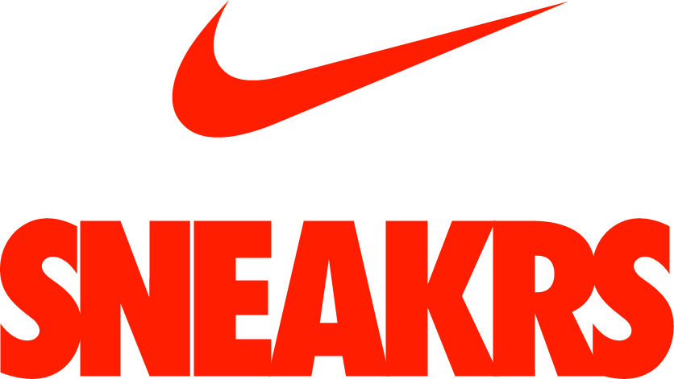

What is a "Hypebeast"?
A hypebeast is someone that is a fan of something that is "hyped up", this means that this person likes things that a lot of people like. As a hypebeast, this hype is about clothing.
A brand announces a product that will be launching in the future, and people will be hyping up that product. This means a lot of people would like to buy this product, but most of the hyped clothing is limited, which means that people are willing to pay more money for the product than the manufacturer asks for it. people that are not interested will also become interested because people are willing to pay more money for it than they bought it for. This is called resell.
How do I get these limited clothes?
The way you get these clothing pieces differs with every company, sometimes you'll have to be fast and sometimes you'll have to win a draw. Supreme is one of the best examples. At first it was "first come first serve" company. This means that the people who are at the store first, will be able to buy the products they want. In 2018 this started to get out of hand because when Supreme would drop an insanely hyped up item, people would be camping in front of the store for at least 2 days. Later on they fixed this problem by setting up a register system. You'll have to register on the site to get acces to a time slot, you'll be allowed in the store at that specific time and you'll be able to buy the products that are still available.
Altough they fixed the problem with camping, the online store is still a mess. When a season of Supreme is live, every Thursday at 11:00 o'clock the site adds new products. Most of the time these products will be sold out in a few seconds. The reason most of these products sell out this fast is because of bot. Bots are automated programs that will check out products in a couple of seconds. This means people that don't have a bot have a big disadvantage. Supreme has tried a lot of things to kill bots, but until now without succes. A bot also is quite an investment because they will run you at least $200.00.
For sneakers the best site/app is SNEAKRS from Nike. On this app, limited shoes drop at 10:00 o'clock. They'll give you half an hour to enter the draw, and they will choose the winners randomly. They check the adresses of accounts which means you can't have more than one account, this way the draw will be fair.
